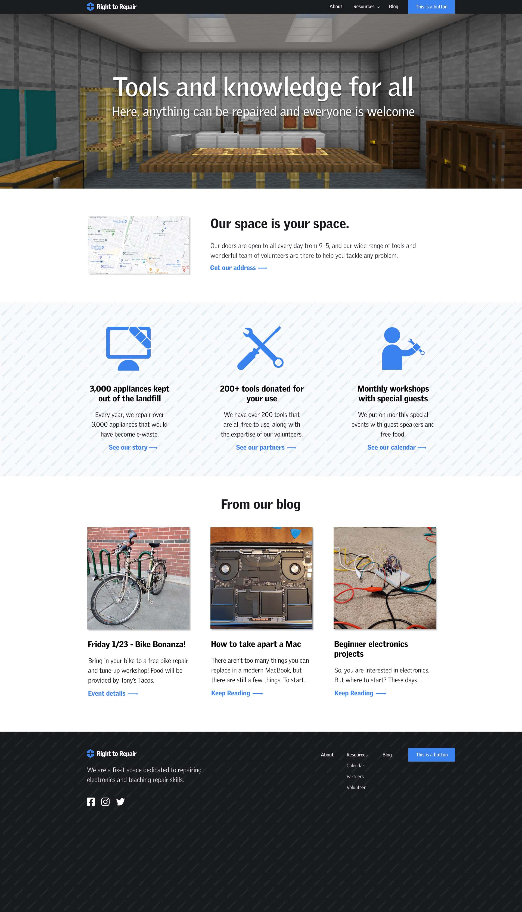

Creating a visual identity and site mockup
Project
I conducted market research, developed a brief, and created a visual identity and website mockup for Right to Repair. Right to Repair is a fictional nonprofit, and was created as part of my UI/UX class at UC Davis.
Involvement
- UX research
- Logo design
- Visual identity
- Mockups
Research and ideation
This project was all centered around user experience research. The information architecture of the site was designed following a pattern analysis of sites from other nonprofits, and my research of those sites is included as part of the process work I compiled.
Identity
Once I had a strong research-based architecture for my site, it was time to find a visual identity that would make a strong impression, and set Right to Repair apart from the crowd. I went through many iterations for logos, typography, and visual style, seeking out the nuances that fit Right to Repair’s unique brand.
Mockups
The site mocks went through many iterations, as I moved away from a generic site and into a site that reflected the character of the organization.
Process work
Along with the final mockup, I also created a slide deck that covers my initial audience research, my design pattern analyses, my visual identity iterations, and my mockup design process. You can download the full document below:
·Download the full file